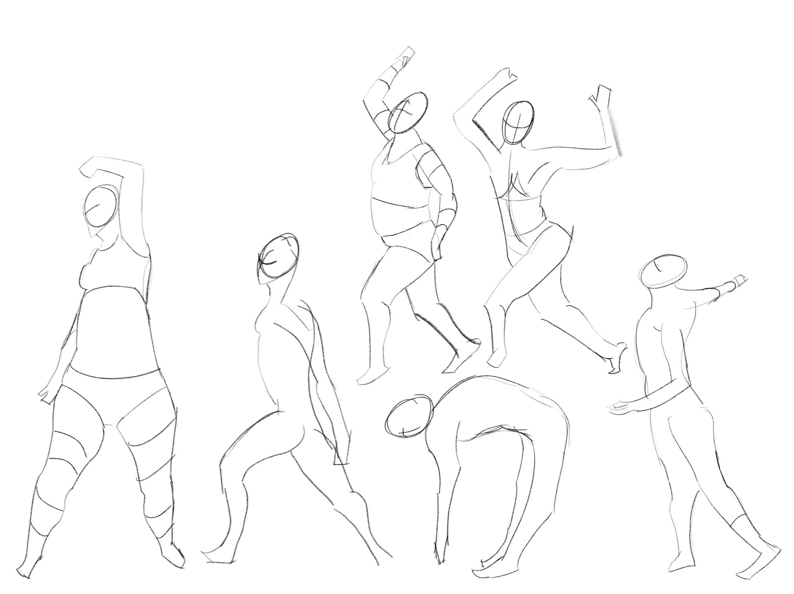
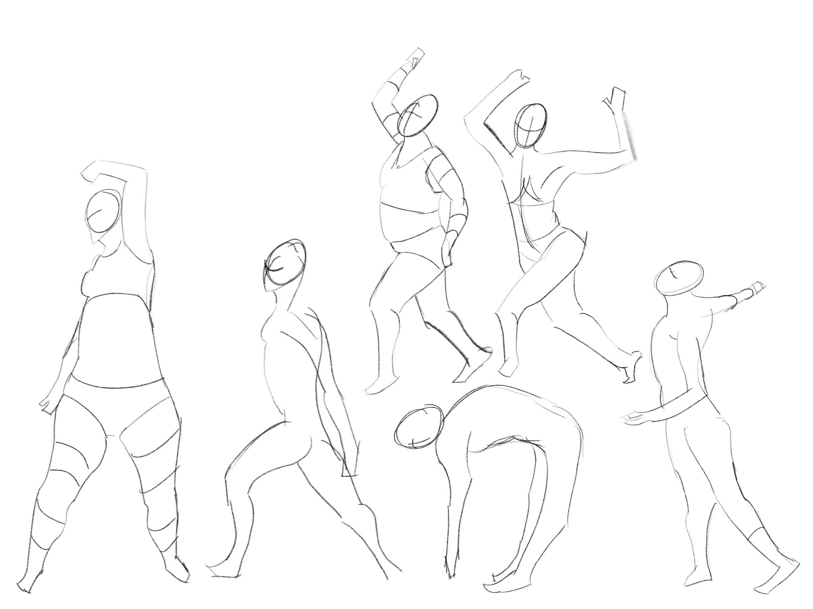

Figure Drawing 2, Week 3
Week of August 22
4h 5m of drawing
Monday
1h 5m
Watching Proko's video on how to
draw gesture made me realize that I've never really learned how to
do this -- Kenzo's course taught me how to past shapes together to draw
figure in the front, back, and side views, but I was always overly
focused on contour as opposed to gesture.
Today I got in the groove of drawing the movement of a figure in two
minute timed drawings, as opposed to getting caught up in the anatomy
right away. I think this led to the drawings looking more expressive and
less stiff.
 
 
Tuesday
1h 35m
More timed gesture practice, along with learning the method of the bean for drawing torsos.
Tried applying it to the gestures in the last page of drawings for
today, but haven't quite gotten it down yet
Saturday
25m
Spent the past few days engrossed in making an animated music video with After
Effects for Hack Lodge. I wish I
had made time to draw, but I'm back on it now
Sunday
1h 0m
Last day in NYC before flying back to Toronto. Drew some gestures, then
read the first half of the graphic novel Blankets by
Craig Thompson and tried drawing a frame from it.
Failing at this reminded me that I have a long journey of improvement
ahead of me, but I'll get to the level I want to be at one day